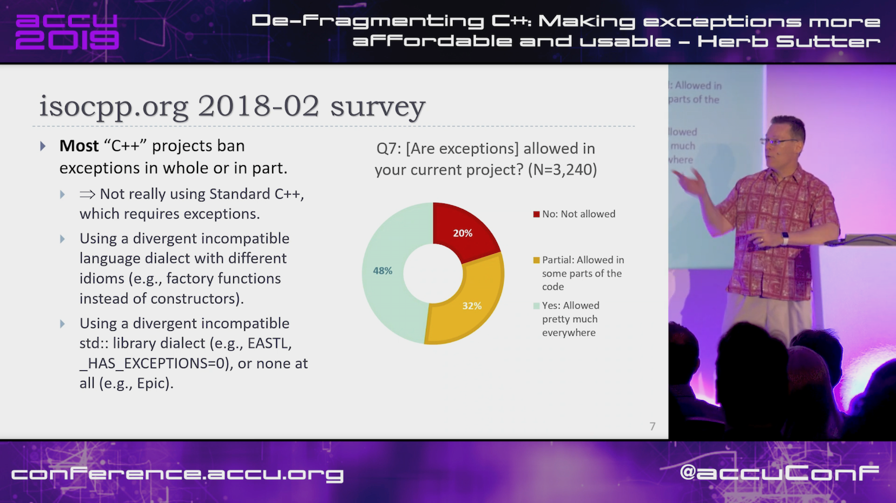
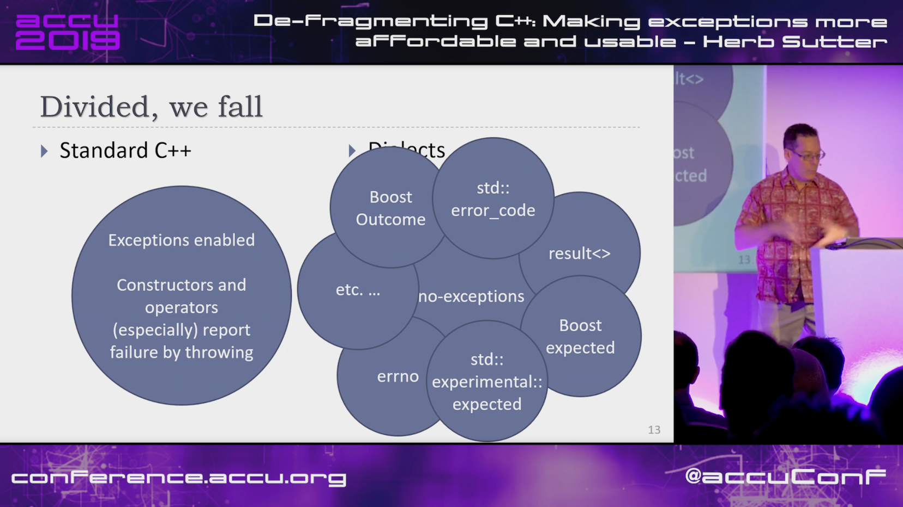
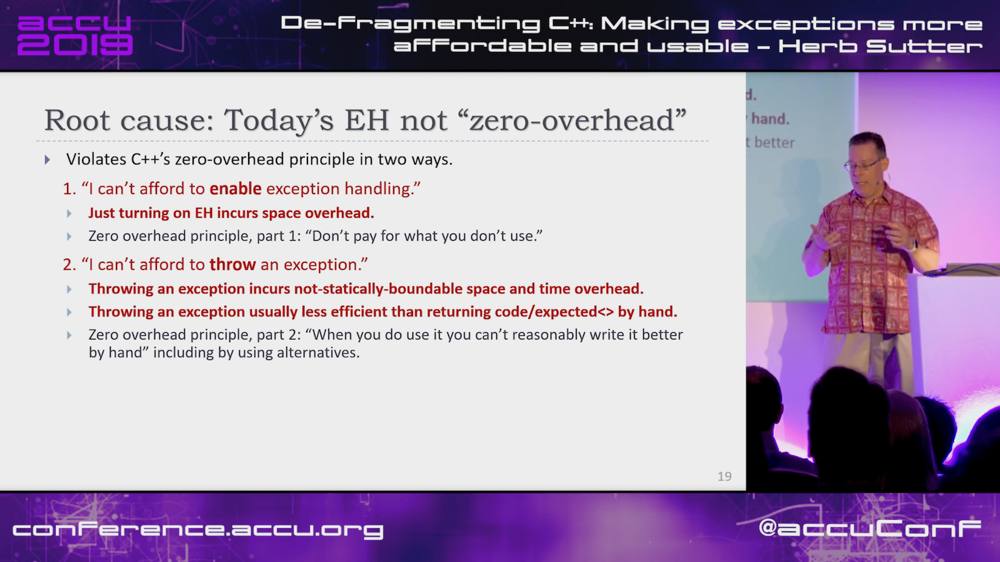
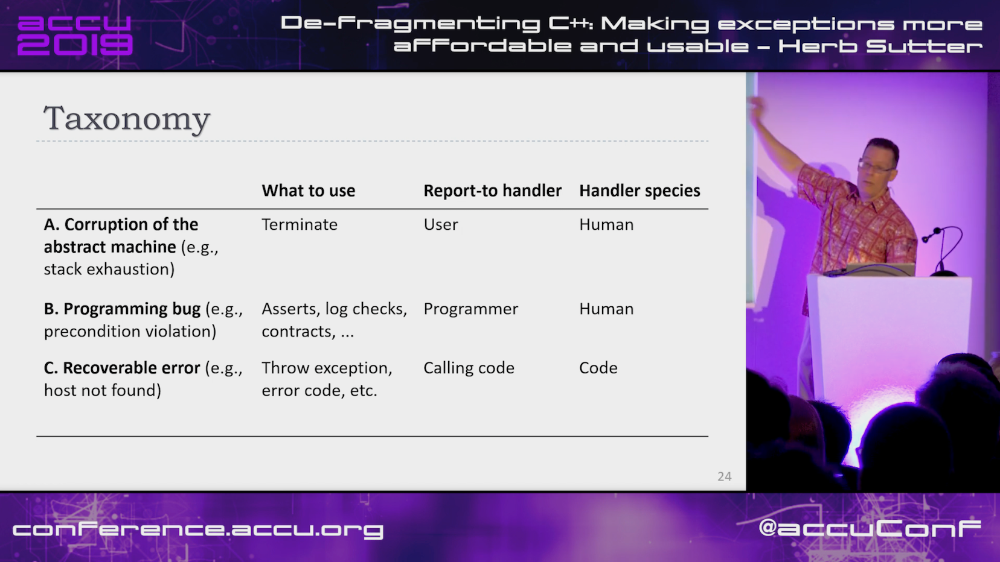
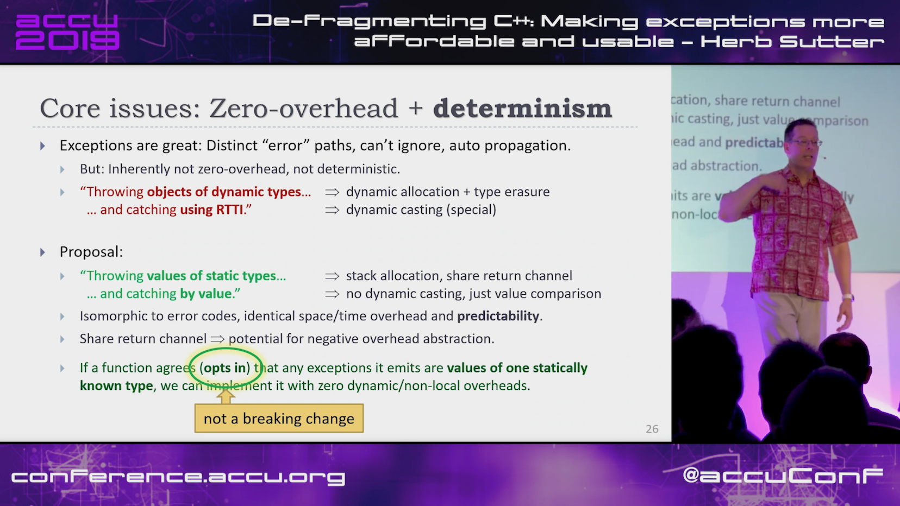
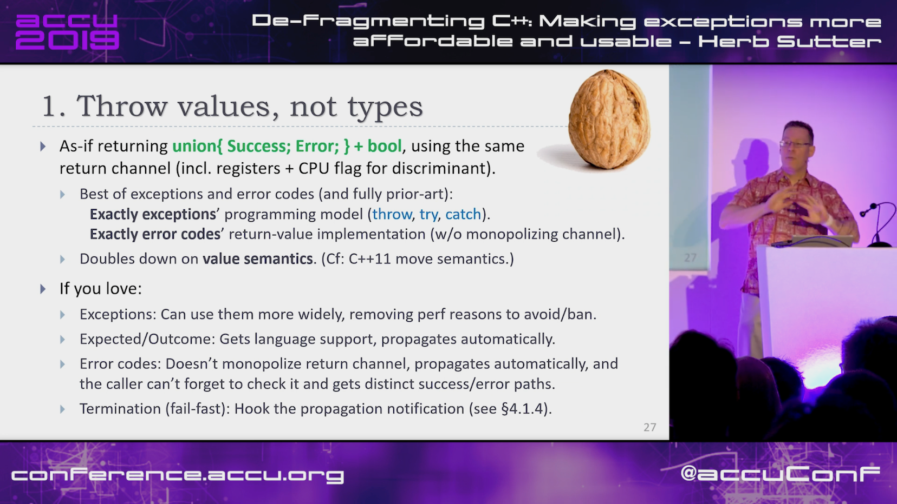
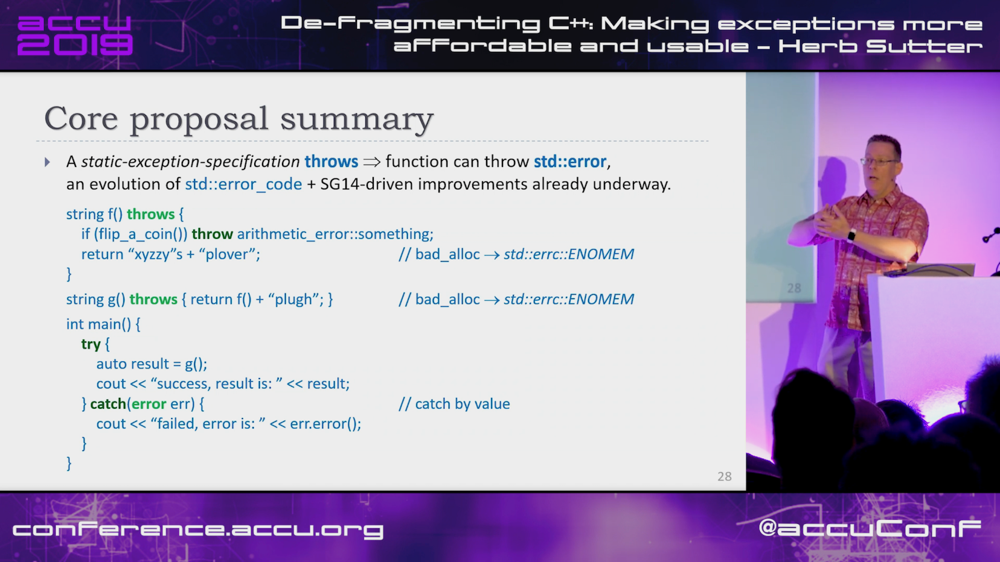
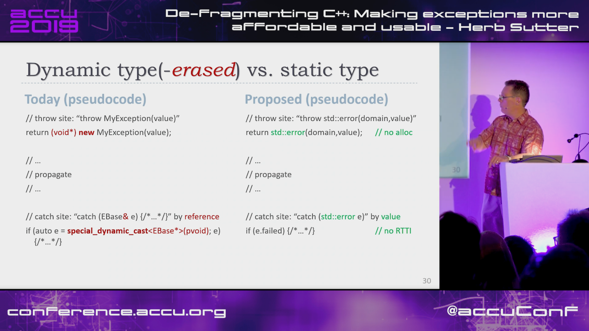
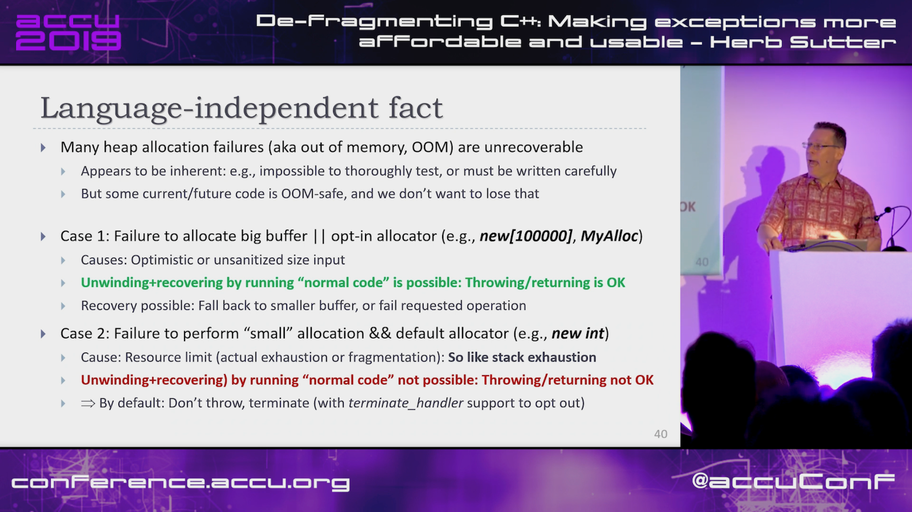
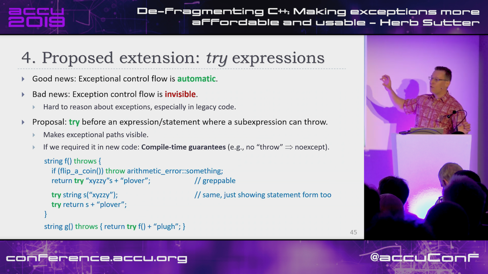

2019-05-02
https://www.acodersjourney.com/top-25-cplusplus-api-design-mistakes-and-how-to-avoid-them/
Book: Martin Reddy - API Design for C++
https://www.reddit.com/r/cpp/comments/bh5b75/top_25_c_api_design_mistakes_and_how_to_avoid_them/
https://www.youtube.com/watch?v=os7cqJ5qlzo
https://www.reddit.com/r/cpp/comments/bifsdx/herb_sutter_accu_2019_defragmenting_c_making/










https://www.reddit.com/r/cpp/comments/aoidsi/what_is_the_solution_for_same_function_parameters/
Before:
https://www.reddit.com/r/cpp/comments/aoidsi/what_is_the_solution_for_same_function_parameters/
After:
template<class F> struct Auto : F {
// conversion operator
template<class T> operator T() {
return F::template operator()<T>();
}
};
template<class F> Auto(F) -> Auto<F>; // deduction guidehttps://www.reddit.com/r/cpp/comments/aoidsi/what_is_the_solution_for_same_function_parameters/
After:
template<class... A>
auto fooWrapper(A&&... a) {
return Auto{[&]<class T>() { return foo<T>(std::forward<A>(a)...); }};
};
template<class... A>
auto fooWrapper(int i) {
return Auto{[=]<class T>() { return foo<T>(i); }};
};
double d = fooWrapper(42);Code: https://github.com/skypjack/uvw (C++14, MIT)
Reddit: https://www.reddit.com/r/cpp/comments/b3wkbf/exhaustive_and_composable_error_handling_in_c/
https://www.reddit.com/r/cpp/comments/aqidl6/boostoutcome_ready_for_boost_170_release/
https://brevzin.github.io/c++/2018/12/09/mixed-comparisons/
https://www.reddit.com/r/cpp/comments/a3gp0s/best_logging_libraries/
https://vorbrodt.blog/2019/04/06/data-alignment-the-c-way/
Before modern C++:
Now:
https://www.reddit.com/r/cpp/comments/bgdawr/what_are_some_things_commonly_taught_in_c_that/
using namespace std; #protected. Where author of base class assumes you will correctly fiddle with protected members. #https://github.com/p-groarke/clamp_cast
A narrowing cast that does the right thing. clamp_cast will saturate output values at min or max if the input value would overflow / underflow.
double ld = -42.0;
unsigned char uc = clamp_cast<unsigned char>(ld);
// uc == 0
float f = 500000.f;
char c = clamp_cast<char>(f);
// c == 127Philippe M. Groarke: https://philippegroarke.com/posts/2018/c++_ui_solutions/
Reddit:
Modern UI in C++ https://www.reddit.com/r/cpp/comments/b3s2zq/modern_ui_in_c/
https://www.reddit.com/r/cpp/comments/b9xb3n/its_2019_we_have_the_power_of_constexpr_and/
https://github.com/Neargye/nameof
See also: CTTI https://github.com/Manu343726/ctti
TL;DR: You can emulate OCaml polymorphic sum type error handling in C++17.
Code: https://bitbucket.org/fkosmale/composableresult/src/master Reddit: https://www.reddit.com/r/cpp/comments/b3wkbf/exhaustive_and_composable_error_handling_in_c/
Some people also take exception to the fact that exception handling tables can bloat binaries, or to some <...> slow-down due to exceptions. While one might disagree on the severity of this issue <...>, this issue is important enough for all major compilers to provide a no-exceptions flag, which disables exception support. This makes exceptions a bad idea for library writers who want their libraries to work in as many contexts as possible.
class AST;
struct SyntaxError {int line; int column;};
struct GrammarError {int line; int column; std::string explanation;};
auto parse(std::string input) -> Result<AST, SyntaxError, GrammarError>;
struct LengthError {int length;};
struct HeightError {int height;};
auto validate(AST ast) -> Result<AST, LengthError, HeightError>
struct DisplayError {std::string explanation;}
auto display(AST ast) -> void;auto result = parse(my_input)
.then(validate)
.then(display);
Switch(result)
.Case<SyntaxError>([](auto err){
report_error("Invalid syntax at line", e.line, ":", e.column);})
.Case<GrammarError>([](auto err){
report_error(e.explanation, "at ", e.line, ":", e.column);})
.Case<LengthError>([](auto err){
report_errror("illegal length: ", e.length);})
.Case<DisplayError>([](auto err){
report_error(e.explanation);})
| ESAC;
// Triggers static_assert as HeightError is unhandledhttps://github.com/cpp-taskflow/cpp-taskflow/blob/master/awesome-parallel-computing.md
Barry Revzin: https://brevzin.github.io/c++/2018/09/01/quirks-ctad/
What is the intent behind the declaration of variable x? Are we constructing a new thing (the CTAD goal) or are we using std::tuple as annotation to ensure that x is in fact a tuple (the Concepts goal)?
A clearer example:
// The tuple case
// unquestionably, tuple<int>
std::tuple a(1);
// unquestionably, tuple<tuple<int>,tuple<int>>
std::tuple b(a, a);
// ??
std::tuple c(a);In C++, there are ambiguities when a member function has the same name as a type.
Cpp>>=Cmb